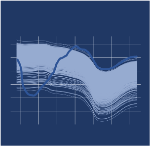

Aggregate data based on grouping variables and a user-provided function
Source:R/aggregate_spectra.R
aggregate_spectra.RdUse grouping variables to collapse spectral data.frame by
mean or median. Recommended for use after filter_spectra
Arguments
- df
data.frameobject containing one or multiple columns of grouping variables (must be consistent within each group), column of reference values (optional), and columns of spectra. Spectral column names must start with "X".- grouping.colnames
Names of columns to be used as grouping variables. Minimum 2 variables required. Default is c("trial", "plot").
- reference.value.colname
Name of reference column to be aggregated along with spectra. Default is "reference"
- agg.function
Name of function (string format) to be used for sample aggregation. Must be either "mean" or "median". Default is "mean".
Author
Jenna Hershberger jmh579@cornell.edu
Examples
library(magrittr)
aggregated.test <- ikeogu.2017 %>%
dplyr::select(-TCC) %>%
na.omit() %>%
aggregate_spectra(
grouping.colnames = c("study.name"),
reference.value.colname = "DMC.oven",
agg.function = "mean"
)
aggregated.test[1:5, 1:5]
#> # A tibble: 5 × 5
#> study.name DMC.oven X350 X351 X352
#> <chr> <dbl> <dbl> <dbl> <dbl>
#> 1 C16Mcal 36.1 0.559 0.562 0.569
#> 2 C16Mval 36.4 0.545 0.549 0.552
#> 3 NA NA NA NA NA
#> 4 NA NA NA NA NA
#> 5 NA NA NA NA NA